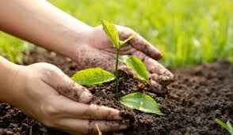
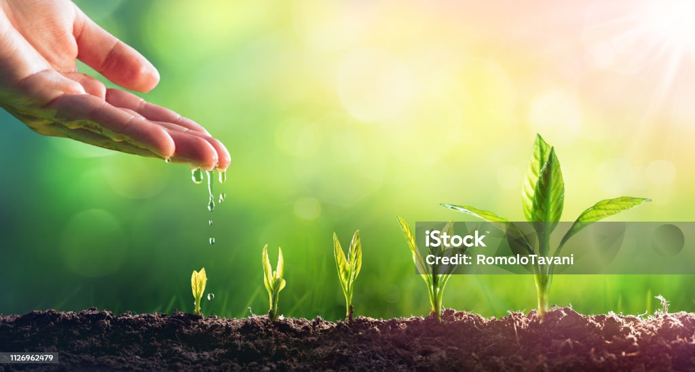

The gardener attends to a number of basic processes: combating weeds and pests; using space to allay
the competition between plants; attending to feeding, watering, and pruning; and conditioning the soil.
Garden is a place that gives relaxation to the mind and soul.Besides, gardening can be an interesting and productive hobby.
Also, it teaches a person the value of patience, hard work, and love and affection.
Because gardening takes a lot of effort in growing and maintaining.
It also gives peace to the person who takes care of it.
Benefits of Garden
The garden is the only place in the house which calm senses and give a pleasing feeling to the mind and body. Also, you can install a gazebo in the garden and enjoy your garden’s beauty while sitting on it.
Besides, another benefit of the garden is that you can grow organic vegetables and fruits at home. The quantity of this product is large so you can share it with your neighbors.
Also, the homegrown fruits and vegetables are more delicious and taste better than the fruits and vegetables that we buy from the market.
Moreover, my garden has many flowering plants that give a pleasuring fragrance that makes the environment light and aromatic. The flowering plants that I have in my garden include roses, sunflowers, dahlia, jasmine, marigold, common, night-blooming jasmine, tuberose flower, hibiscus and many more. But, my all-time favorite is night-blooming jasmine whose pleasing smell spread at night and make the whole house aromatic.

Maintenance of a Garden
Everyone thinks that planting trees and plants is an easy task and anyone with a trowel, lopper, and weeder can easily do it. But, only gardeners and the people who do gardening knows the effort and energy that gardening needs.
Besides, only water is not enough for plants they also need manure. Also, they need daily care in order to keep them healthy and freash.
Moreover, most of the plants are green which means they need proper sunlight. Many people hire professional gardeners for taking care of their garden but doing it on our own is more pleasurable. Also, it helps us to connect with the garden.
Growing the Garden
Most of the plants and trees that are in my garden are either planted by me or my family members. We go to the nursery to buy seasonal plants every season and most of the flowering plants are replaced every season as they die due to climate change. After buying them we plant these saplings or plants in a strategical order. So, that garden looks more colorful.

To conclude, we can say that gardening is a very good and productive habit. Also, it helps a person to establish a connection with the greenery and love towards nature.
Besides, for most of the people, the best memories of childhood are attached to the garden. Garden is the place where families share their evening tea and discussion that keep their bond stronger. Above all, a garden is the most amazing place of the house no matter what the season is.